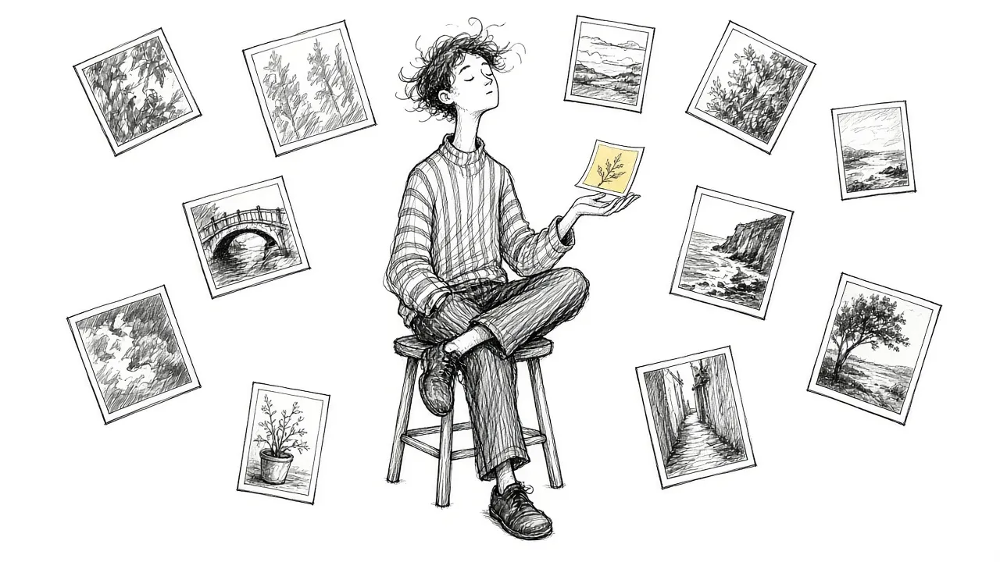

Intrusive Memories After a Death: Why Pushing Them Away Backfires

You are washing dishes, or driving, or about to fall asleep, and suddenly you are back in the hospital room. You see their face in those last hours. You hear the phone call. The image arrives uninvited and leaves you shaken.
Intrusive memories are one of the most distressing parts of grief, especially after a sudden, traumatic, or medically difficult death. They can make you feel like you are losing control of your own mind. You are not. This guide explains why these memories happen, why pushing them away tends to make them louder, and what can help them soften over time.
What intrusive memories are
Intrusive memories are unwanted images, sounds, or thoughts that pop into your mind without your choosing. In grief, they often involve:
- The moment you learned about the death
- The last days or hours of an illness
- Seeing the person after they died
- A difficult final conversation, or one that never happened
- Imagined scenes of how they died, if you were not there
They can feel vivid and present, almost like reliving the moment rather than remembering it. They often bring a jolt of fear, guilt, or sorrow with them.
Why your brain keeps showing you these scenes
Your brain is built to pay close attention to anything that felt dangerous or overwhelming. When something shocking happens, it tags that memory as important and keeps bringing it back, partly to help you make sense of it and partly to protect you from something similar in the future.
In grief, this protective system misfires a little. There is no future danger to prepare for, but the brain does not know that yet. It keeps replaying the scene, trying to file something that does not fit into any existing folder.
Intrusive memories are not a sign that you are stuck. They are a sign that your mind is still trying to make sense of something that should never have happened.
We go deeper on the replaying in Why Your Brain Keeps Replaying Their Last Days.
Why pushing them away backfires
When a painful image appears, the natural instinct is to shove it out of your mind. Think about something else. Turn on the television. Get busy.
That works for a moment. The trouble is that the act of suppressing a thought tends to make it come back more often. Your brain learns that this memory is something dangerous, something that must be avoided at all costs, and so it keeps it on high alert. The harder you push, the more it pushes back.
This is not a personal failing. It is how minds work. Most people have tried not to think of something and noticed it showing up constantly.
A different approach: making room
The alternative to pushing away is not wallowing. It is learning to let the memory pass through without grabbing hold of it or fighting it off. This approach has roots in acceptance-based therapies and mindfulness practice, and many grieving people find it gentler.
1. Notice and name it
When the image arrives, try saying to yourself, "There is the hospital memory again." Naming it creates a small step back. You are the one noticing the memory, not only the one inside it.
2. Breathe and feel your feet
Bring some attention to your body. Feel your feet on the floor, your hands on the counter, the air going in and out. This reminds your nervous system that you are here, now, and safe.
3. Let it be there for a moment
Instead of shoving it out, let the memory sit there briefly, like a cloud passing. You do not need to analyze it or replay it on purpose. Just allow it, and let it drift when it is ready.
4. Turn toward something that matters
When it fades, gently return to what you were doing. The goal is not to never have the memory again. The goal is for it to have less power to knock you over.
Balancing the last memories with the rest of their life
One painful part of intrusive memories is that they can crowd out everything else. Someone who lived for 70 years starts to feel like a single terrible week.
Deliberately inviting other memories can help restore balance:
- Write down a story about them from a good ordinary day.
- Look at photos from different chapters of their life.
- Ask people who knew them to share memories you may not have heard.
- Keep a list of small details: their laugh, their sayings, what they ordered.
This does not erase the hard memories. It gives them company. Over time, the rest of their life can take up more space again. If you are worried about the opposite problem, memories fading, see Afraid You're Forgetting Them?.
Things that tend to make intrusive memories worse
A few patterns often keep these memories stuck:
- Avoiding every reminder. Some distance is healthy, but complete avoidance can keep the memory frozen and sharp.
- Replaying on purpose to look for answers. Going over and over the details in search of what you could have done differently usually deepens the groove.
- Using alcohol or substances to numb out. These may quiet things in the moment but often make sleep and mood worse.
- Isolation. Carrying these images alone can make them feel heavier. Telling one trusted person can help.
If you were not there
Some of the most painful intrusive images are ones you never actually saw. If you were not present when they died, your mind may fill the gap with imagined scenes, often worse than what really happened. If it would help, and if it feels safe, you might ask someone who was there, or a medical professional, what the last moments were really like. Real information is often gentler than imagination. If asking is not possible, you can still remind yourself, when the image appears, that this is your mind guessing, not a memory.
When to seek extra help
Intrusive memories are common in grief, and for many people they soften over months. Sometimes, though, they are part of a trauma response that benefits from specialized care. Consider reaching out to a counselor or therapist if:
- The memories are frequent and intense months after the death
- You have nightmares that keep you from sleeping
- You feel constantly on edge or easily startled
- You avoid large parts of your life to escape reminders
- You feel detached from your body or surroundings
Trauma-informed therapies can help the brain file these memories so they lose their sharp edge. You do not have to wait until things are unbearable to ask for help.
If the memories bring thoughts of ending your life, please call or text 988 now. Someone is there to talk.
A gentle closing thought
The hardest moments of someone's life, and of yours, can feel like they will be the only thing you remember. They will not. With time and gentleness, many people find that the painful images grow quieter, and the fuller picture of the person they loved comes back into view. Making room for the hard memories, rather than fighting them, is often what allows that to happen.
This article is for general information and support. It is not medical or mental health advice. If grief has become unbearable or you are thinking about harming yourself, call or text 988 right now.
Related reading

Grief Alongside Depression and Anxiety
Grief often arrives alongside other mental health challenges. How to recognize overlap and get support for all of it.

Why Your Brain Keeps Replaying Their Last Days
Memories of the final days or moments can loop relentlessly. Here is why that happens and how to let the rest of their life back in.

Rumination in Grief: Getting Off the "What If" Wheel
Endless what-ifs and if-onlys can trap grieving people. Learn why rumination happens and gentle ways to step off the wheel.